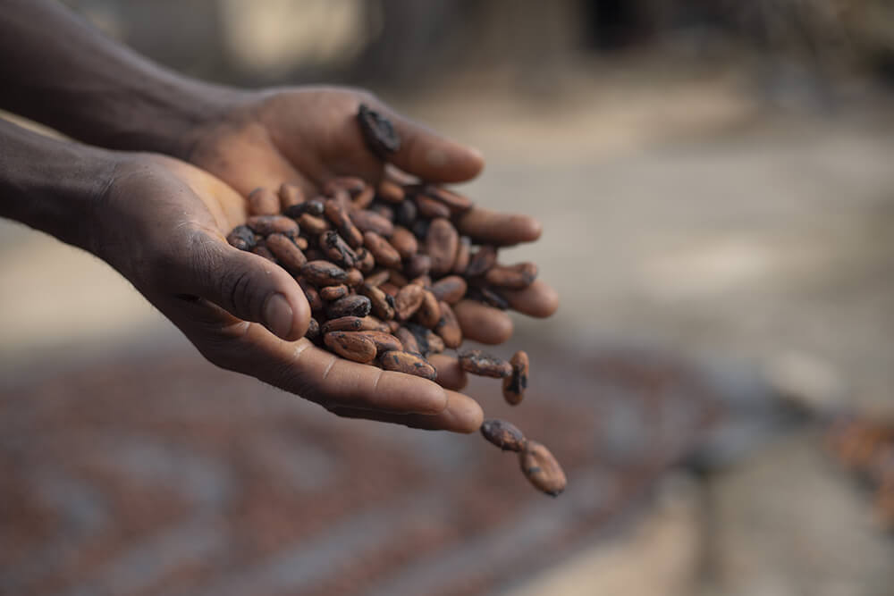
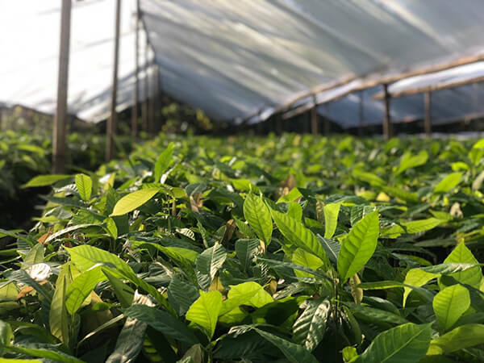
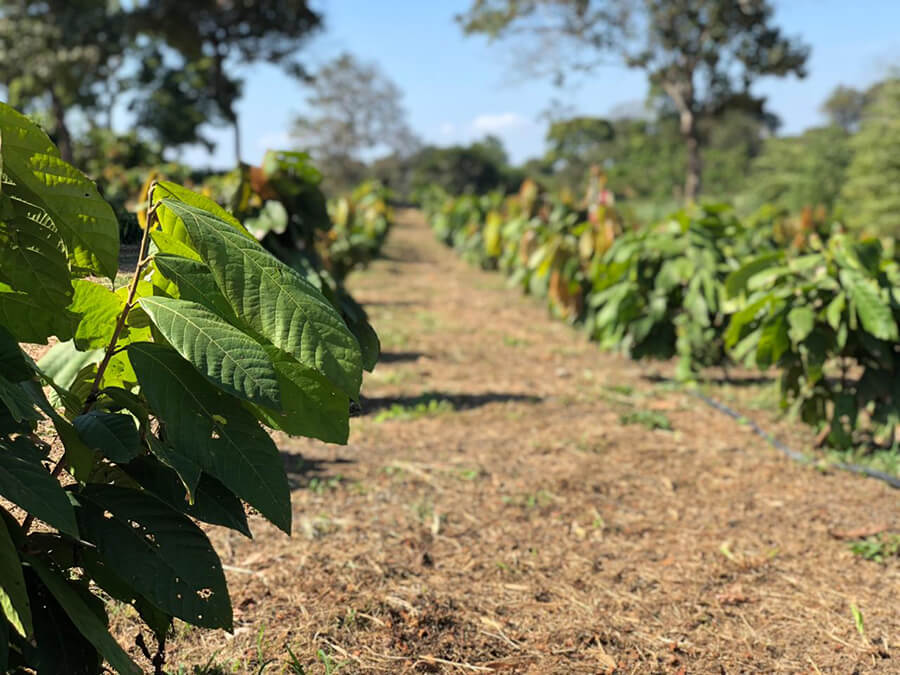
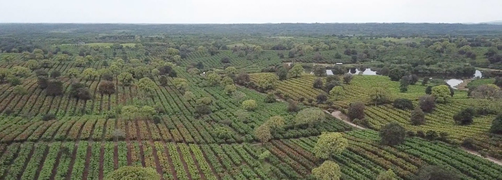
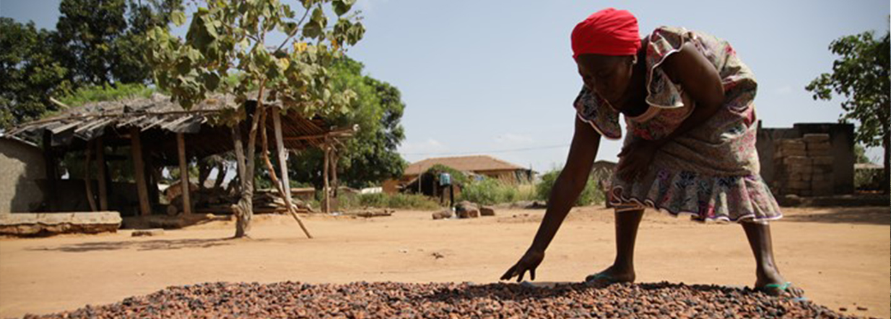
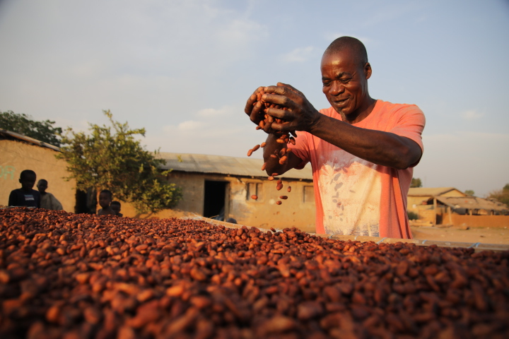

Creating a more sustainable world that brings better moments and more smiles where they are needed most.
Advertisement Feature
Our sponsors provide financial support for this website. We endeavour to give our sponsors the opportunity to communicate their messages in placements that are clearly demarcated. Such placements are clearly labelled as Advertisement, Advertisement feature, Sponsored content, Sponsor's perspective, "Brought to you by" the sponsor or words to that effect. Occasionally, we group together content from various sources relating to the same topic. In cases where content from The Economist Group is included, it will be clearly labelled as from The Economist or Economist Intelligence Unit. At all times there is a clear division between our editorial staff and sponsors, and sponsors are never allowed to influence what our editorial teams write. Sponsors are solely responsible for their content, and their views do not necessarily reflect those of The Economist.
Reshaping the future of cocoa
As one of the world’s largest buyers of cocoa, Mars Wrigley, a treats and snacks manufacturer, aims to help reshape the future of cocoa towards a resilient supply chain that protects the planet and enables cocoa communities to thrive.

Across the globe, the trend for businesses to shoulder responsibilities to a broad range of stakeholders continues to build momentum, exemplified by the adoption of environmental, social, and governance (ESG) ratings as a tool for institutional investors. Mainstream enthusiasm for doing business with a purpose other than profits in mind can seem modish. But the approach has a long history among private and co-operatively owned firms with the independence to develop and follow unique philosophies.
Mars Incorporated, a family-owned business founded in 1911, holds to a deeply purpose-driven ethos. It orients itself around Five Principles: Quality, Responsibility, Mutuality, Efficiency, and Freedom. With these in mind, it adopts the overarching purpose that “The world we want tomorrow starts with how we do business today.”
And the principle of mutuality is today driving a concerted effort to reshape the cocoa supply chain that delivers one of the most crucial inputs in its products.
The importance of sustainable cocoa supply chains
Cocoa is central to the livelihoods of nearly 350,000 cocoa farmers in Mars’s global supply chain. Many cocoa farming families and their communities struggle to thrive as they face socio-economic challenges such as poverty, structural inequalities, and lack of access to the tools and financial capital that could improve their circumstances.
This drives Mars to strive to create a sustainable cocoa supply chain and to meaningfully improve the lives of cocoa farming families so that they thrive and have the resources available to reduce the environmental impact of cocoa production. Currently, roughly three-quarters of Mars’s GHG emissions comes from the agricultural practices and land-use change associated with growing the ingredients Mars needs to make their products. The company has a global commitment to achieving net zero across its entire value chain by 2050.
Mars Incorporated, a family-owned business founded in 1911, holds to a deeply purpose-driven ethos. It orients itself around Five Principles: Quality, Responsibility, Mutuality, Efficiency, and Freedom. With these in mind, it adopts the overarching purpose that “The world we want tomorrow starts with how we do business today.
As a framework for its goal of making cocoa supply chains more sustainable, Mars launched its Cocoa for Generations strategy in September 2018, committing $1 billion in investment over 10 years with the objective of creating a cocoa supply chain that is inclusive, modern and sustainable. Initiatives that champion achieving these three goals are active in regions from which the company sources its cocoa, from West Africa to Latin America and South-East Asia.

Responsible Cocoa programme: Protecting people and the environment
Mars is accelerating the transformation of the cocoa ecosystem in an effort to make it more modern, inclusive and sustainable—to help people and the planet thrive. This means helping create an ecosystem where no one is left behind—working toward systemic solutions that tackle structural issues holding back progress—including everything from access to finances and women’s empowerment to working with farming families on climate-smart agricultural practices.
All this supports Mars’s aim to have 100% of its cocoa responsibly sourced, traceable from farm to first point of purchase, and deforestation-free by 2025.
To prevent cases of forced and child labour in cocoa production for the long term, solutions must tackle the root causes. In this regard, Mars is taking action in the relevant areas of increased income, access to quality education, and women’s social and economic empowerment.
The Responsible Cocoa programme works to help people and the planet thrive, supporting Mars’s aim to have 100% of its cocoa responsibly sourced, traceable from farm to first point of purchase, and deforestation-free by 2025.
In Ghana, Côte d’Ivoire and Indonesia, Mars has collaborated with the KIT Royal Tropical Institute and Pabla van Heck (independent) to uncover the unmet needs of women in cocoa farming communities. It was concluded that the longer-term, often overlooked and neglected “mainstreaming” work of changing mindsets and social norms is essential if we want to make meaningful progress in lowering barriers to equality, reducing poverty and unlocking the full potential of women and girls. Mars is taking action by embedding a gender transformative lens into its cocoa policies, strategies, partnerships and programmes linked to human rights, the environment and farmer income.
In addition, through its collaboration with poverty-fighting organisation CARE in Côte d’Ivoire and Ghana, reaching almost 50,000 Village Savings and Loans Association (VSLA) members today, Mars is supporting women, their families, and hundreds of cocoa growing communities with access to savings and loans programmes, as well as other income generating activities and financial literacy trainings. These interventions help enable them to improve their livelihoods and build income resilience.
Informed by decades of research in soil management, agronomy and plant science, Mars invests in larger-scale farming to help pioneer new cocoa growing practices which can regenerate soil, improve biodiversity and benefit communities.
Charlotte is a single mother of six from Côte d’Ivoire whose story represents the potential of the VSLA model to make participating in cocoa supply chains more beneficial.
A trader and the owner of a cocoa field, Charlotte is a member of a local VSLA that afforded her a loan to start a restaurant business, fulfilling a local need while creating an extra income stream to support her family. VSLAs can give Charlotte and women like her greater independence, helping to free them from reliance on men and reduce the chances that their children will end up in hazardous work. “I created my own business and now take care of my children; I have educated them all, even in business,” she says.

Modernising cocoa agriculture: A climate-smart venture to catalyse an industry shift
In addition to driving industry-level changes to support cocoa growing communities in becoming economically and environmentally more resilient, the next priority is to modernise cocoa production to make it more sustainable. As is the case for other crops as well, Mars believes this modernisation should happen both in smallholder and larger scale cocoa farming.
Informed by decades of research in soil management, crop production (agronomy) and plant science, Mars invests in larger-scale farming to help pioneer new cocoa growing practices which can regenerate soil, improve biodiversity and benefit communities.
Through its Innovating Sustainable Smallholder Cocoa Farming programme, Mars aims to deploy initiatives to help reshape the cocoa supply chain in the long-term by speeding up modernisation and developing a model that enables farmers to increase their incomes.
In Latin America, the business is partnering with asset manager and agroforestry operator 12Tree and sustainable cocoa supplier ECOM in a climate-smart venture called Andean Cacao, which will contribute to the Cocoa for Generations’ aim of building a modern and sustainable cocoa supply chain. By entering a long term agreement in connection with the venture, Mars Wrigley will help it achieve financial stability and scale. “This groundbreaking partnership will…bolster climate change mitigation and adaptation, biodiversity enhancement, people’s well-being and smallholder initiatives,” says Xavier Sagnieres, an executive of 12Tree and chief executive of Andean Cacao.

The project will use agroforestry, precision agriculture and tailored irrigation systems to generate healthy, vibrant soil and sequester carbon on almost 3,000 hectares of degraded cattle pastureland, uniting 12Tree’s expertise in transforming land, ECOM’s experience of managing agricultural commodities in Latin America, and Mars Wrigley’s 30-plus years of research and innovation in cocoa agronomy. “I’m excited about the knowledge we’ll gather through the Andean Cacao venture to apply the best of modern sustainable cocoa farming elsewhere,” says Amber Johnson, global vice-president of Cocoa Enterprise at Mars Wrigley.
Andean Cacao has already created more than 250 long-term jobs (at least 25% filled by women) and includes more than 200 smallholder farmers in its network, helping them achieve greater yields and higher price points by providing technical assistance, transportation and capacity building programmes for farmers.
On the environmental front, in just over two years, Andean Cacao has increased by 14% the organic matter content in the soil through regenerative practices and cocoa agroforestry design, which will contribute to increase carbon sequestration, aiding in the company’s journey to produce climate-smart cocoa.

Sustainable Cocoa tomorrow: Reshaping the supply chain for the long term
For farms to support families across multiple generations, they must also be managed efficiently.
Through its Innovating Sustainable Smallholder Cocoa Farming programme, Mars aims to deploy initiatives to help reshape the cocoa supply chain in the long term by speeding up modernisation and developing a model that enables cocoa farming families to increase their income.
These initiatives include further innovation in sustainable family farming through bundles of interventions focused on personalised farm coaching, strengthened farmer market power through co-operatives, farmer groups and access to market, and helping farming families develop multi-year farm and household business plans that include diversified incomes so that families have resilient means to improve their livelihoods.
A centrepiece of this work is cocoa coaching, which involves creating networks of trained farmers who can coach others to improve productivity. The story of Pak Alexander, a farmer and “cocoa doctor” from Indonesia, shows how the Mars-driven initiative can help transform farmers’ futures.
Alexander’s father gave him the plot to manage when he first returned to the family business, but the land was in “terrible condition”, which affected his income. After hearing about the cocoa coaching programme from an uncle, Alexander spent four weeks learning about farming techniques and how to run a business.
The results were life-changing. “I was able to triple my yield, and now I’m helping other cocoa farmers be as productive,” says Alexander. The family’s income from farming alone increased nearly tenfold, and since the days when he left to work elsewhere, his view of the family’s legacy has turned around. “I want my children to continue running the farm when they grow up,” he says.

Others in the area are also optimistic with Alexander behind them. “It’s people like him who help the young adults of this village in farming cocoa,” says Masnawati, also a cocoa farmer. “Cocoa promises so much for our future,” she says.
Masnawati’s hopeful assessment suggests that the Cocoa for Generations strategy is bearing fruit. But more remains to be done. “To create meaningful change across the industry, like farmers moving out of poverty, increased cohesion across the business, government and civil society groups is needed, combining expertise and collectively stepping up efforts,” says Johnson.
Next steps for sustainable cocoa
In April 2022, Mars announced the next step in its efforts to transform the cocoa ecosystem, with programmes in Côte d’Ivoire and Indonesia to support 14,000 smallholder farmers who are building a path to sustainable living income over the next eight years. In conjunction with USAID, the Institute for Development Impact, Fairtrade, co-operatives union ECOOKIM, and others, the effort seeks to address challenges created by market failures and climate change by bundling interventions around credit and financial inclusion, agroforestry and income diversification; helping to create the conditions in which families with small cocoa farms can lift themselves out of poverty.
The plan draws on insights from the Farmer Income Lab’s research and Mars’s existing programmes in other raw ingredients. Mars’s Shubh Mint project covers 20,000 small farms in Uttar Pradesh, India, and led to a boost in crop net income of over 250%. In Côte d’Ivoire, the Livelihood Ecosystem Advancement Program (LEAP) will aim to help more than 70% of the 5,000 participating farmers achieve a living income by 2030, which translates to income growth of more than 100% for most households involved. In Indonesia, the Advancing Cocoa Agroforestry Towards Income, Value and Environmental Sustainability alliance (ACTIVE) aims to promote cocoa agroforestry projects that address climate change mitigation and adaptation, while improving livelihoods for smallholder farmers.
To learn more about these two new pilot programmes, click here.
BACK TO TOP